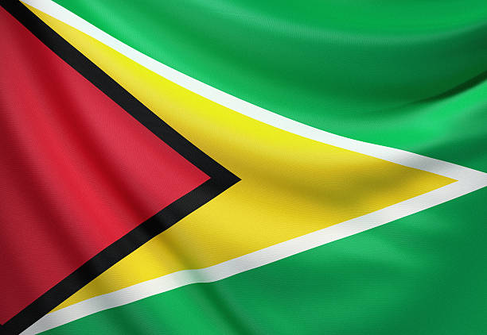

A história da Guiana foi marcada pela colonização realizada, primeiramente, pelos holandeses e, depois, pelos britânicos. Na colonização, a região foi usada para a produção de açúcar e para o cultivo de algodão principalmente. A independência da Guiana em relação aos britânicos foi conquistada em 1966, e o país é atualmente uma república presidencialista. Historicamente o país tem um entrave diplomático com a Venezuela por conta da questão de Essequibo, região que corresponde a mais da metade do território da Guiana e que é rica em petróleo e gás natural.
O críquete é o desporto mais popular na Guiana, ao contrário de outros países da América do Sul onde o futebol é o desporto predominante. O críquete é muito popular no Caribe e um dos astros do desporto na Guiana é Roger Harper, que teve o auge da sua carreira nos anos 80 e 90 e atualmente é treinador.
A culinária guianense é uma fusão das cozinhas africana, ameríndia, indiana e espanhola. O tempero muito usado é o curry, de origem indiana.
A língua oficial da Guiana é o inglês, o que faz dela o único país da região a ter o inglês como língua oficial. Mesmo assim, o país reconhece dez línguas faladas regionalmente, como Akawaio, Macushi, Patamona e Wapishana.
O clima predominante é o tropical no norte, e o equatorial no sul. As temperaturas são elevadas praticamente o ano todo, havendo uma baixa amplitude térmica. As chuvas ocorrem de forma abundante, especialmente no litoral.
O cristianismo e hinduísmo são as religiões dominantes na Guiana. Os dados de um censo de 2012 sobre a afiliação religiosa indica que aproximadamente 63% da população é cristã: 22% pentecostal, 7% católica romana, 5% anglicana, 5% adventista do sétimo dia, e 22% de outros grupos cristãos. Cerca de 25% são hindus, 7% são muçulmanos (sunitas), crenças e práticas 2% de outros, incluindo o movimento rastafári e a fé bahá'í. Uns 4% estimados da população não professa religião nenhuma.